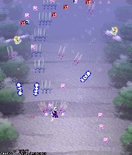

中ボスを倒すと回転しながらジグザグに雑魚が出てくるので敵の位置に合わせて左右に動いて撃破しよう。
一緒に出てくる魔方陣の雑魚は弾を撃ってくるので攻めに夢中になって当たらないよう注意。
パワーアイテムが大量に取れるので全部の雑魚を撃破したい所。
最初に画面右側から雑魚が出てくるので、出現前に右側でショットを撃ちながら待っていよう。
アイテムは取りこぼさないように注意すべし。 特に1面では点アイテムよりパワーアイテムを取った方が攻略が楽になるので パワーアイテムを優先して取るように意識すべき。

雑魚が上方にワシワシ出てきたら自機狙いの弾を撃ってくるので、
敵弾を自機に当たらない程度に引きつけてから小さく避けよう。
腕に自信のある方はかすってみるのも良いかも。
突然、雑魚のクセに激しい弾幕を撃ってくるが、中ボスの出現と同時に弾が消えるのでヘタに大きく動かないほうが無難。
チルノの攻撃は固定弾（毎回同じ弾道）なので何回か練習すれば余裕で避けれるようになります。
腕に自信の無い人は下の方にいれば避け易いけど
中ボスのチルノを早く倒すとその後に出てくる雑魚の数が増えて、
Powerアイテムをいっぱい取れるのでちょっと上の方で素早く倒せるようにしたいところ。
中ボスを倒すと回転しながらジグザグに雑魚が出てくるので敵の位置に合わせて左右に動いて撃破しよう。
一緒に出てくる魔方陣の雑魚は弾を撃ってくるので攻めに夢中になって当たらないよう注意。
パワーアイテムが大量に取れるので全部の雑魚を撃破したい所。